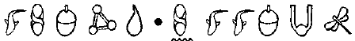
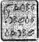

ST BARTLEBY’S GENÇ BEYEFENDİLER OKULU
KAHYA, Artemis doğduğu günden beri onun hizmetindeydi. Patronunun dünyaya gözlerini açtığı ilk gece, Kâhya, Sisters of Mercy Doğumevinde nöbet tutmuştu.
On yılı aşkın bir süredir, Kâhya genç mirasçının öğretmenliğini, akıl hocalığını ve koruyuculuğunu yapıyordu. Şimdiye kadar asla bir haftadan uzun süre birbirlerinden ayrı kalmamışlardı. Aslında bunun onu rahatsız etmemesi gerektirdiğini biliyordu. Bir koruma sorumlu olduğu insana duygusal açıdan bağlanmamalıydı. Bu durum karar verme yetkisini etkilerdi. Ama Kâhya yalnız kaldığında, Fowl’lerin vârisini, sahip olamadığı bir oğul ya da erkek kardeşi olarak düşünmeden edemezdi.
Kâhya, Bentley Red Label Arnage’yi okulun olduğu caddeye park etti. Avrasyalı bu okul dönemin başından beri oldukça irileşmişti. Artemis’in yatılı okula başlamasıyla birlikte, spor salonunda daha fazla zaman harcamaya başlamıştı. Gerçeği söylemek gerekirse, Kâhya ağırlık kaldırmaktan sıkılmıştı ama kolej yetkilileri ona Artemis’in odasında bir ranza yatak vermeyi kesinlikle reddetmişlerdi. Ve bahçıvan, koruma görevlisinin golf sahasının kenarındaki gizli sığınağını fark edince, Kâhya’nm okula girmesi tamamen yasaklanmıştı.
Artemis okulun kapısından sıvışırken, Doktor Po’nun söyledikleri hâlâ akimın bir köşesindeydi.
“Bir sorun mu var, efendim?” dedi Kâhya, patronunun sıkıntısını fark ederek.
Artemis, Bentley’nin şarap rengi deri koltuğuna kurulup soğutucudan bir şişe su aldı. “Sayılır, Kâhya. Saçmalayan bir psiko-şarlatan daha.”
Kâhya sesini yükseltmedi. “Onunla konuşmamı ister misin?”
“Boş ver onu şimdi. Fowl Star’dan ne haber?”
“Bu sabah, malikâneye bir e-posta geldi. MPEG uzantılı bir dosya.”
Artemis kaşlarını çattı. Cep telefonundan MPEG uzantılı video dosyalarını açamıyordu.
Kâhya torpidodan bir dizüstü bilgisayar çıkarttı. “Dosyayı görmek için sabırsızlanacağını düşündüm, bu yüzden dosyayı buraya kaydettim.”
Bilgisayarı omzunun üzerinden arkaya uzattı. Artemis küçük aleti çalıştırıp renkli, düz ekranının kapağını açtı. Başta şarjının bitmiş olduğunu sandı ama sonra karlarla kaplı bir araziye baktığını anladı. Bu yalnızca çukurların ve kümelerin incecik gölgeleri dışında, beyaz üzerine beyaz bir görüntüydü.
Artemis bağırsaklarının burulduğunu hissetti. Böylesine zararsız bir resmin bir felaket habercisi olması garipti.
Kamera yukarı çevrildi ve kasvetli, alacakaranlık bir gökyüzü belirdi. Sonra uzaklarda, siyah renkli, eğik bir nesne. Kameraman karlara doğru ilerlerken, bilgisayarın hoparlörlerinden ritmik bir çatırtı yükseldi. Nesne netleşti. Bu, bir sandalyeye oturmuş, yok hayır, bağlanmış bir adamdı. Artemis’in bardağındaki buz tıngırdadı. Elleri titriyordu.
Adamın üzerinde, bir zamanlar şık sayılabilecek bir takım elbisenin paçavraları vardı. Mahkûmun yüzü, şimşekleri andıran yara izleriyle dağlanmıştı ve bacaklarından biri yokmuş gibi duruyordu. Bu tam belli olmuyordu. Artemis bir maraton koşucusu gibi solumaya başladı.
Adamın boynunda bir tabela asılıydı. Bu sicim ve kartondan yapılmış bir şeydi. Tabelanın üzerinde, kalın kara harflerle: Zdravstvutye, syn yazılıydı. Kamera birkaç saniye boyunca yazıya odaklandı, sonra görüntü kayboldu.
“Hepsi bu mu?”
Kâhya, başıyla onayladı. “Yalnızca adam ve tabela. Hepsi bu.”
“Zdravstvutye, syn,” diye mırıldandı Artemis, kusursuz bir vurgulamayla. Babası ortadan kaybolduğunda beri, kendi kendine bu dili öğreniyordu.
“Tercüme etmemi ister misin?” diye sordu Rusça bilen Kâhya. Rusça’yı seksenli yılların sonlarında bir casusluk birimiyle geçirdiği beş yılda öğrenmişti. Ama vurgulaması, genç patronununki kadar iyi değildi.
“Hayır, ne demek olduğunu biliyorum,” diye cevapladı Artemis. “Zdravstvutye, syn: Merhaba, oğlum.”
Kâhya, Bentley’i iki şeritli yola doğru sürdü. Birkaç dakika boyunca ikisi de konuşmadı. Sonunda, Kâhya dayanamayıp, sordu;
“Sence o mu, Artemis? Sence o adam, baban olabilir mi?”
Artemis MPEG dosyasını başa sardı ve gizemli adamın yüzü belirdiğinde, resmi dondurdu. Ekranı elledi ve resmin çevresinde gökkuşağını andıran eğri büğrü çizgiler oluştu.
“Sanırım, Kâhya. Ama görüntü çok bozuk. Emin olamıyorum.”
Kâhya genç patronunun ne kadar heyecanlandığını anlamıştı. O da Fowl Star’da bir yakınını kaybetmişti. Binbaşı olan amcası, kaderinde yazılı bu gemi yolculuğunda, Artemis’in babasını korumakla görevlendirilmişti. Ne yazık ki Binbaşı’nın cesedi Tchersky morguna bulunmuştu.
Artemis soğukkanlılığını yeniden kazandı. “Bu işin izini sürmeliyim, Kâhya.”
“Sırada ne olduğunu biliyorsun, değil mi?”
“Evet. Bir fidye talebi. Bu yalnızca dikkatimi çekmek için yapılmış bir şey. Peri Halkının altınlarının bir bölümünü paraya çevirmem gerek. Hemen Zürich’i arayıp Lars’la temasa geç.”
Kâhya hızlı şeride geçti.
“Artemis, ben bu konularda biraz deneyim kazandım.”
Artemis, Kâhya’nın sözünü kesmedi. Artemis doğmadan önce Kâhya’nın oldukça yoğun bir iş yaşantısı olmuştu.
“Adam kaçıranların yöntemleri görgü tanıklarını ortadan kaldırmaktır. Ardından da fidyeyi bölüşmemek için birbirlerini ortadan kaldırmaya çalışırlar.”
“Yani demek istediğin?”
“Demek istediğim, fideyi ödemek, babanın güvenliğini kesinlikle sağlamaz. Tabii ki bu adama gerçekten babansa. Onu kaçıranlar önce paranı alıp sonra da hepimizi öldürebilirler.”
Artemis ekranı inceledi. “Haklısın, tabii ki. Bir plan yapmam gerekecek.”
Kâhya yutkundu. Artemis’in en son planını anımsadı. Az kalsın ikisini birden öldürüp gezegeni, türler arası bir savaşa sürükleyecekti. Kâhya kolay kolay korkacak biri değildi ama Artemis Fowl’un gözlerindeki kıvılcımlar tüylerini diken diken etmeye yetmişti.
E1 ÇAVLAN TERMİNALİ : TARA, İRLANDA
Yüzbaşı Holly Short çift mesai yapmaya karar verdi ve doğrudan yeryüzüne çıktı. Tara terminalinden kalkan ilk mekiğe binmeden önce, sadece bir besin-kalıbı ve bir enerji içeceği almak için kısa bir mola verdi.
Tara’daki memurlardan biri ona güçlük çıkarıyordu. Güvenlik biriminin başı, Yüzbaşı Short’un E1’den öncelikli bir yumurta almak için tüm çavlan trafiğini durdurmasına ve bununla da kalmayıp dönüş yolculuğu için koca bir mekiğe el koymaya kalkışmasına çok sinirlenmişti.
“Neden sisteminizi bir kez daha gözden geçirmiyorsunuz?” dedi Holly, sıktığı dişlerinin arasından. “Eminim ki izin Polis Plaza’dan şimdiye kadar gelmiştir.” Saldırgan gnome avuçiçi bilgisayarım gözden geçirdi. “Hayır, bayan. Hiçbir şey yok.”
“Bakın, Beyefendi...”
“Adım, Kumandan Terryl.”
“Kumandan Terryl. Burada önemli bir görev için bulunuyorum. Ulusal güvenlik. Önümüzdeki birkaç saat boyunca tüm varışları iptal etmenizi istiyorum.”
Terryl baygınlık numarası yaptı. “Önümüzdeki birkaç saat boyunca mı? Sen deli misin, küçük kız? Atlantis’ten gelen üç mekiğim var. Onlara ne söylememi istiyorsun? LEP’in gizli maskaralıkları yüzünden turlar iptal edildi dememi mi? Şu an turist sezonundayız. Durup dururken hiçbir şeyi kapatamam. Asla, kesinlikle.”
Holly omuz silkti. “Pekala. Öyleyse bırakalım da turistler aşağı indireceğim iki insanla karşılaşsınlar. Gerçek bir cümbüş olacak. Bundan emin olabilirsin.”
“İki insan mı?” dedi güvenlik şefi. “Terminalin içinde mi? Keçileri mi kaçırdın?”
Holly’nin sabrı ve zamanı tükenmek üzereydi. “Şunu görüyor musun?” diye sordu başlığındaki rütbeleri işaret ederek. “Ben LEP’im. Bir yüzbaşıyım. Hiçbir geçici- polis gnome emirlerime karşı gelemez.”
Terryl yaklaşık yetmiş santimlik boyuyla, tüm heybetini göstermek istermişçesine dimdik durdu. “Evet, seni duydum. Çılgın yüzbaşı kız. Geçen yıl burayı epeyce birbirine katmıştın, öyle değil mi? Yaptığın bu pisliği temizlemek için külçelerimi uzun süre vergiye yatırmam gerekecek.”
“Merkeze sorsana, seni bürokratik geri zekâlı.”
“Beni istediğin gibi çağırabilirsin, küçük hanım, burada kurallarımız var ve aşağıdan onay gelmeden, onları değiştirmek için yapabileceğim hiçbir şey yok. Özellikle de senin gibi davranış bozukluğu olan, silah delisi küçük bir kız için.”
“Öyleyse, Polis Plaza’yı ara.”
Terryl burun kıvırdı. “Magma alevleri, gösteriş yapmaya henüz başladılar. Hat almak zor olur. Belki sonra yeniden denerim, devriyemi tamamladıktan sonra. Sen bu arada gidiş salonunda kendine bir koltuk ayarla.” Holly’nin eli vızıltı değneğine uzandı.
“Ne yaptığının farkındasın, değil mi?”
“Ne?” diye vırakladı gnome.
“LEP’in harekâtını engelliyorsun.”
“Ben hiçbir şey engellemiyorum...”
“Ve benim gerekli gördüğüm durumda, engelleri ortadan kaldırmak için her türlü gücü kullanma yetkim var.” “Beni tehdit etme, küçük bayan.”
Holly değneğini çıkarıp ustaca döndürdü. “Seni tehdit etmiyorum. Yalnızca, polislerin çalışma yöntemi konusunda sana bilgi veriyorum. İşime engel olmayı sürdürürsen, engeli yani bu durumda seni ortadan kaldırıp komuta zincirinde sıradakine geçerim.”
Terryl ikna olmamıştı. “Buna cesaret edemezsin.
Holly sırıttı. “Ben çılgın yüzbaşı kızım. Unuttun mu?”
Gnome, Holly’nin söylediklerini dikkate aldı. Memurun onu vızıldatacağını pek sanmıyordu ama dişi elflerin ne yapacağı hiç belli olmazdı.
“Pekala,” dedi bilgisayardan bir sayfanın çıktısını alarak. “Bu yirmi dört saatlik bir vize. Ama bu süre içinde geri gelmezsen, döndüğünde seni tutuklamak zorunda kalırım. Sonra tehditleri savurma sırası bana gelecek.” Holly sayfayı kaptı. “Her neyse. Şimdi unutma, geri döndüğümde Gelişlerin boş olmasını sağla.
İRLANDA, ST BARTLEBY'DEN FOWL MALİKÂNESİNE DÖNÜŞ
Artemis, Kâhya’dan fikir alıyordu. Bu, bir plan yapmaya çalıştığında sıkça kullandığı bir yöntemdi. Ne de olsa, bir harekâtın yönünü değiştirmek söz konusu olduğunda korumasından daha deneyimlisi yoktu.
“Bu MPEG dosyasının izini sürebilir miyiz?”
“Hayır, Artemis. Bunu denedim. E-postaya, sistemi çökerten bir virüs yerleştirmişler. Orijinal dosya yok olmadan tek yapabildiğim filmi diskete kaydetmek oldu.”
“Peki ya, MPEG’nin kendisi? Yıldızlardan coğrafi bir konum belirlemesi yapabilir miyiz?”
Kâhya gülümsedi. Genç Artemis bir asker gibi düşünmeye başlıyordu.
“Hiç şansımız yok. NASA’da görevli bir arkadaşıma resmi gönderdim. Onu bilgisayara yükleme zahmetine bile girmedi. Yeterince tanım yokmuş.”
Artemis bir dakika sessiz kaldı.
“Rusya’ya ne kadar sürede varabiliriz?”
Kâhya parmaklarını direksiyonun üzerinde tıkırdattı. “Bu, değişir.”
“Neye göre değişir?”
“Nasıl gittiğimize bağlı, yasal mı, yasa dışı mı?” “Hangisi daha hızlı?”
Kâhya güldü. Bu pek sık yapmadığı bir şeydi. “Yasa dışı genellikle daha hızlıdır. Ama her iki yol da oldukça uzun sürecek. Havadan gidemeyiz, orası kesin. Mafya her piste adamlarını yerleştirmiştir.”
“Bunun Mafya’nın işi olduğuna emin miyiz?”
Kâhya dikiz aynasından baktı. “Korkarım ki öyle. Her kaçırma olayı Mafya’nın elinden geçer. Babanı sıradan bir suçlu bile kaçırmış olsa, haber duyulur duyulmaz onu Mafya’nın eline teslim etmek zorunda kalmıştır.”
Artemis başını salladı. “Ben de öyle düşünmüştüm. Bu yüzden denizden gitmek zorundayız ve bu da en azından bir hafta sürecek. Yolculuk konusunda biraz
yardım alabiliriz. Mafya bizden, böyle bir şey beklemeyecektir. Kimlik durumumuz ne?”
“Sorun yok. Rus uyruğuyla giriş yapabileceğimizi düşündüm. Böylece daha az dikkat çekeriz. Hazır pasaportlarım ve vizelerim var.”
“Da*. Kim olacağız peki?”
*da: Rusça evet.
“Stefan Bashkir ve Amcası Constantin’e ne dersin?” “Harika. Satranç dehası ve refakatçisi,” Daha önceki araştırmaları sırasında defalarca bu kimliğe girmişlerdi. Bir keresinde, bir satranç ustası olan bir kontrol memuru öykülerine inanmamıştı, ta ki Artemis onu altı hamlede yeninceye kadar. O zamandan beri bu yöntem, Bashkir Manevrası olarak biliniyordu.
“Ne kadar zamanda yola çıkabiliriz?”
“Hemen. Bayan Fowl ile Juliet bu hafta Nice’teler. Bu bize sekiz gün kazandırıyor. Okula bir mektup yollar bir şeyler uydururuz.”
“Eminim ki St Bartleby’s benden bir süreliğine kurtulacağına sevinecektir.”
“Fowl Malikânesinden doğruca havaalanına gidebiliriz. Lear jetimiz hazır. Hiç olmazsa İskandinavya’ya kadar uçar, oradan da bir gemiye binmeyi deneriz. Ama önce malikâneden bir şeyler almam gerekiyor.”
Artemis, hizmetkârın tam olarak ne tür şeyler almak istediğini hayal edebiliyordu. Sivri ve patlayıcı şeyler. “Pekala. Ne kadar acele edersek, o kadar iyi olur. Bu adamları, onları aradığımızdan haberleri olmadan, bulmamız gerek. Yolda, e-postaları gözden geçirebiliriz.”
Kâhya, Fowl Malikânesinin yoluna saptı.
“Biliyor musun, Artemis,” dedi Kâhya, aynadan bakarak. “Rus Mafyasının karşısındayız. Bu adamlarla daha önce de iş ilişkilerim oldu. Pazarlık etmezler. Olay kanlı bitebilir. Bu gangsterlerle boy ölçüşürsek, insanlar zarar görecektir. Büyük bir olasılıkla da bu insanlar bizleriz.”
Artemis cama yansıyan görüntüsüne bakarak, dalgın dalgın başıyla onayladı. Bir plana ihtiyacı vardı. Cüretli ve dahice bir şeye. Daha önce hiç kalkışılmamış bir şeye. Artemis boş yere kaygılanmıyordu. Beyni şimdiye kadar onu asla yarı yolda bırakmamıştı.
TARA MEKİK İSTASYONU
Tara’daki peri mekik istasyonu çok etkileyici bir yerdi. On bin metreküp büyüklüğündeki terminal McGraney çiftliğinin ortasındaki yabani otlarla kaplı bir tepenin altında gizliydi.
McGraneyler yüzyıllardır peri kalelerinin sınırlarına saygı göstermişler ve yine yüzyıllardır yüzlerine gülen şanslarının tadını çıkarmışlardı. Hastalıkları bir gecede esrarengiz bir şekilde geçmişti. Sürekli olarak topraklarından değeri biçilemeyen sanat eserleri çıkmış ve deli dana hastalığı hayvanlarına bulaşmamıştı.
Vize sorununu halleden Holly en sonunda güvenlik kapısından çıkıp ışın kamuflajının içine daldı. Bu yolculuk için yanma, güvenli bir çift Koboi DoubleDex almayı başarmıştı. Bu kanatlar uydu-şarjlı, güneş enerjisiyle beslenen bir pille çalışıyordu ve devrimci bir tasarıma sahiptiler. İki çift kanat ya da donatısı vardı; biri süzülmek için sabit olanlardı; daha küçük olan diğerleri de manevra içindi. Holly, DoubleDex’i denemek için deli oluyordu ama şimdiye kadar yalnızca birkaç çifti, Koboi Laboratuarlarından çıkarabilmeyi başarmışlardı. Foaly onları ortalığa çıkartmaya pek hevesli değildi, ne de olsa kendisi tasarımı değillerdi. Mesleki kıskançlık işte. Holly onun laboratuarda olmamasından yararlanıp raftan bir takım yürütebilmişti.
Holly filtresiz yüzey havasının ciğerlerine dolmasına izin vererek, yerden on beş metre yükseldi. Havayı kirletici maddelerle dolu olsa da geri dönüşümlü tünel havasında daha iyiydi. Holly birkaç dakika boyunca yaşadığı anın tadını çıkardı, sonra dikkatini asıl görevine yoğunlaştırdı: Artemis Fowl’un kaçırılmasına.
Evinden kaçırılamazdı. Fowl Malikânesi kesinlikle olmazdı. Bir konuta iziniz girmekle kendini yasal olarak büyük tehlikeye atmış olurdu. Teknik olarak Fowl onu geçen yıl kaçırmakla davet etmiş sayılsa bile bu savunmanıza dayanarak, hiçbir avukat davanızı kabul etmezdi. Her neyse, malikâne gerçek bir kaleydi ve LEP’in tüm Düzeltme timini görmüş geçirmişti. Daha iyisi can sağlığıydı.
Ayrıca ortada, Artemis’in kendisini bekliyor olması gibi bir pürüz de vardı, özellikle de eğer B’wa Keli ile uğraşıyorsa. Bir tuzağın tam ortasına düşme düşüncesi Holly’ye pek cazip gelmiyordu. Bir kez Fowl Malikânesi’nde esir düşmüştü zaten. Hiç kuşkusuz, hücresindeki eşyalar hâlâ oldukları gibi duruyordu.
Holly bilgisayarın yön belirleme sistemini çalıştırıp miğferinin siperliğinden Fowl Malikânesini seçti. Evin üçboyutlu planının yanında açık, kırmızı renkte bir ışık yanıp sönmeye başladı. Bina LEP tarafından yasak bölge ilan edilmişti. Holly homurdandı. Şimdi, yeraltında Artemis Fowl’un adını duymamış bir Recon memuru kalmış olabilir diye, görsel bir uyarı izlemeye zorunda kalacaktı.
Ekranda Onbaşı Lili Frond’un yüzü belirdi. Bu görev için tabii ki Lili’yi seçmişlerdi. O LEP’in çekici yüzüydü. Karşı cinsin zayıflığını savunan zihniyet Polis Plaza’da varlığını sürdürüyordu. Bir elf kralının soyundan gelmiş olmasının, Frond’un LEP’teki puanlarını yükselttiği söylentiler arasındaydı.
“Fowl Malikânesini seçtiniz,” dedi Frond’un görüntüsü, gözkapaklarmı kırpıştırarak. “Burası, tehlikeli bölge olarak ilan edilmiş bir bina. İzinsiz giriş kesinlikle yasaktır. Üzerinden geçmeye bile kalkışmayın. Artemis Fowl Peri Halkı için gerçek bir tehdit unsuru sayılmaktadır.”
Frond’un yanında Fowl’un bir resmi belirdi. Kaşlarını çatışı dijital olarak belirginleştirilmişti.
“Kâhya olarak bilinen suç ortağına, hiçbir şekilde yaklaşmayın. Genellikle silahlı ve sürekli olarak tehlikelidir.”
Kâhya’nın kocaman yüzü öbür ikisinin görüntülerinin yanında belirdi. Silahlı ve tehlikeli demek, ona haksızlık sayılırdı. Kâhya tarih boyunca bir trolle boy ölçüşüp onu yenmeyi başaran tek insandı.
Holly koordinatları uçuş bilgisayarına gönderip kanatların rotayı belirlemelerini sağladı. Kırlar altından hızla geçiyordu. Son ziyaretinden bu yana Çamur Adamların istilası artmış gibi görünüyordu. Düzinelerce konutun parsellememiş olduğu bir hektarlık bir alan, sularına fabrikaların zehirli suları karışmayan, bir millik bir nehir bile kalmamıştı.
Sonunda güneş ufuk çizgisinin ardında kayboldu ve Holly siperliğindeki filtreleri yukarı kaldırdı. Artık zaman ondan yanaydı. Bir plan yapmak için önünde bütün bir gece vardı. Holly kulağında çınlayan, Foaly’nin o alaylı yorumlarını özlediğini fark etti. Sentorun gözlemleri sinir bozucu olsalar da genellikle doğruydular ve birçok fırsatta da Holly’yi kurtarmayı başarmışlardı. Holly bir hat almaya çalıştı ama alevler hâlâ çok yüksekti ve telsiz yayını alamıyordu. Yalnızca parazit vardı.
Fowl Malikânesi uzakta bir hayal gibi belirdi, çevresini saran alana tam anlamıyla hükmediyor gibiydi. Holly ısı-ölçer çubuğuyla binayı taradı ama böceklerden ve küçük kemirgenlerden başka bir canlı türüne rastlamadı. Yalnızca Örümceklerle fareler vardı. Evde kimse yoktu. Bu onun için uygundu. Holly özellikle tüyler ürpertici bir taş gargoyleun başına konup beklemeye koyuldu.
FOWL MALİKÂNESİ, DUBLİN, İRLANDA
İlk Fowl şatosu on beşinci yüzyılda Lord Hugh Fowl tarafından, dört bir yandan kırlık alanı görecek şekilde inşa ettirilmişti. Normadiyalıların taktiği şuydu: asla düşmanlarının gizlice sana yaklaşmalarına izin verme. Şatonun şekli malikâneye dönüşene kadar yüzyıllar boyunca büyük ölçüde değiştirilmişti ama güvenliğe verilen önem hep aynıydı. Malikânenin çevresi bir metre kalınlığındaki duvarlarla çevriliydi ve gerçek bir sanat eseri olan bir güvenlik sistemiyle donatılmıştı.
Kâhya yoldan çıkıp uzaktan kumada ile binanın giriş kapılarını açtı. Arkasına dönüp patronunun düşünceli yüzüne baktı. Bazen, tüm bağlantılarına, aracılarına ve emrindekilere karşın, Artemis Fowl’un şimdiye kadar gördüğü en yalnız çocuk olduğunu düşünüyordu.
“Yanımıza bu peri silahlarından birkaçını alabiliriz,” dedi Kâhya.
Kâhya geçen yılki kuşatma sırasında, Bir numaralı LEP Değiştirme timinin silahlarına el koymuştu.
Artemis başıyla onayladı. “İyi fikir ama nükleer pillerini çıkart, silahları eski oyun ve kitaplarla aynı çantaya koy. Yakalanırsak, oyuncak olduklarını söyleriz.”
“Evet, efendim. İyi fikir.”
Bentley Red Label evin garajını caddeye bağlayan yola girince güvenlik ışıkları yandı. Ana binada bir sürü ışık açıktı. Bunlar yalnızca zamanlayıcılara bağlı, rasgele yanıp sönen ışıklardı.
Kâhya emniyet kemerini çözdü ve eğilerek, arabadan çıktı.
“Özel bir şeye ihtiyacın var mı, Artemis?”
Artemis başıyla onayladı. “Mutfaktan biraz havyar getir. Dönem başına on bin sterlin aldıkları halde Bartleby’deki yemeklerin iğrençliğine inanamazsın.”
Kâhya bir kez daha gülümsedi. Canı havyar çeken, on üç yaşında bir çocuktu. Buna asla alışamıyordu.
Yeni tadilatı yapılmış girişe doğru ilerlerken, Kâhya’nın dudaklarındaki gülümseme dondu. Kalbinde bir ürperti hissetti. Bu duyguyu iyi biliyordu. Annesi ona, mezarından çıkan bir ölü var derdi. Altıncı his dedikleri bu önsezi olmalıydı. Bir yerlerde bir tehlike vardı. Görünmüyordu ama yine de buralarda bir yerdeydi.
Holly arabanın gökyüzünü yaran farlarını bir mil öteden seçti. Bu yerin görüş açısı iyi değildi. Otomobilin ön camı görüş alanına girmişti ama camlar koyuydu ve arkasındaki gölgeler karanlıktı. Holly, Fowl’un arabasını görür görmez, kalp atışlarının hızlandığını hissetti.
Bentley cadde boyunca yılan gibi kıvrılarak, söğüt ve at kestanesi ağaçlarının arasından ilerledi. Holly içgüdüsel olarak başını eğdi, oysa kalkanı sayesinde insan gözüyle asla görülemezdi. Ama Artemis Fowl’un hizmet kârıyla hiçbir şey belli olmazdı. Geçen yıl Artemis gasp ettiği bir peri miğferinden Kâhya’ya LEP değiştirme komandolarından oluşan koca ekibin yerini saptayıp onları etkisiz duruma getirecek bir mercek yapmıştı. Şu an, Kâhya’nın o merceği taktığını pek sanmıyordu ama Bela Kelp ve adamlarının öğrendiği gibi Artemis’i ya da hizmetkârını küçümsemeye gelmezdi.
Holly, Neutrino’sunu önerilen şok düzeyinin biraz üzerine ayarladı. Kâhya’nın birkaç beyin hücresi kızarabilirdi ama Holly bunun için üzülecek değildi.
Araba garaj yoluna girince lastikleri çakılların üzerinde çatırdadı. Kâhya dışarı çıktı. Holly arka dişlerinin gıcırdadığını hissetti. Bir zamanlar, bir trolle ölümcül bir çarpışma sonrasında, Kâhya’yı tedavi etmiş ve hayatını kurtarmıştı. Aynı şeyi bir daha yapar mıydı, bundan emin değildi.
LEPrecon Yüzbaşısı Holly Short soluğunu tutarak DoubleDex takımını yavaş bir inişe geçirdi. Sessizce inip binanın katlarını seke seke geçti ve silahını Kâhya’nın göğsüne doğrulttu. Bu gözleri güneşten kamaşmış bir cücenin bile asla kaçıramayacağı bir hedefti.
Hizmetkâr onun varlığını fark etmiş olamazdı. Bu olanaksızdı. Ama yine de Kâhya’yı duraksatan bir şey vardı. Durdu ve havayı kokladı. Bu Çamur Adam tıpkı bir köpek gibiydi. Hayır bir köpek değil, bir kurt gibi. Hem de kocaman ve silahlı bir kurt.
Holly başlığının merceğini Kâhya’nın silahına odaklayıp fotoğrafını bilgisayarının veritabanına gönderdi. Birkaç saniye sonra, silahın üçboyutlu döner bir resmi siperliğinin köşesinde belirdi.
“Sig Sauer,” dedi Foaly’nin kaydedilmiş sesi. “Dokuz milimetre boyunda. Şarjöründe on üç mermi var. Büyük kurşunlar. İçlerinden biri isabet ederse, başını uçurabilir; bunu büyü bile iyileştiremez. Bunun dışında, her şey yolunda gidiyor olmalı, kısa süre önce yerüstüne uygun olarak tasarladığım mikro-lifli tulumunu giymeyi unutmadığını varsayarsak tabii. Bir Recon subayı olarak, büyük olasılıkla unutmamış sındır.”
Holly kaşlarını çattı. Foaly haklı olduğunda, daha da sinir bozucu oluyordu. Holly yerüstü kıyafetini giyme zahmetine bile girmeden, ilk boş mekiğe adayıp gelmişti.
Şu an Holly’nin gözleri, Kâhya’nınkilerle aynı düzeydeydi, üstelik de yerden bir metre yükseklikte uçuyordu. Siperliğinin kilitlerini açınca, çıkan havalı ıslığı duyunca yüzünü buruşturdu.
Kâhya da çıkan gazın sesini duymuş, Sig Sauer’ını, sesin geldiği yöne doğrultmuştu.
“Peri,” dedi. “Orada olduğunu biliyorum. Kalkanını kaldır yoksa ateş etmeye başlayacağım.”
Holly’nin aklındaki taktiksel üstünlüğün bu olduğu söylenemezdi. Siperliğini yukarı kaldırmıştı ve hizmetkârın parmağı tabancasının incecik tetiğini gıcırdatıyordu. Holly derin bir soluk alıp kalkanını Çaldırdı.
“Selam, Kâhya,” dedi sakin bir sesle.
Kâhya, Sig Sauer’ının horozunu kaldırdı. “Selam, Yüzbaşı. Yavaşça yere in ve sakın o numaralarından birini denemeye...”
“Silahını bırak,” dedi Holly, hipnoza özgü büyülü bir ses tonuyla.
Kâhya direndi, silahın namusu elinin içinde titriyordu.
“Bırak onu, Kâhya. Beni beynini kızartmama zorlama.”
Kâhya’nın gözkapağındaki damarlardan biri seğirdi.
Garip, diye düşündü Holly. Bunu daha önce hiç görmemiştim.
Kâhya konuşmak için ağzını açtı. Artemis’i uyarmak için. Holly biraz daha üsteledi, büyü hizmetkârın başından dolup taşıyordu.
“Onu bırak, dedim!”
Korumanın yanağından bir ter damlası aktı.
“BIRAK ONU!”
Kâhya yavaş yavaş ve istemeyerek dediğini yaptı,.
Holly gülümsedi. “Aferin, Çamur Adam. Şimdi, arabaya geri dön ve hiçbir şey olmamış gibi davran.”
Hizmetkârın bacakları beyninin emirlerini hiçe sayarak, söz dinlediler.
Holly kalkanını açtı. Bu çok eğlenceli olacaktı.
Artemis dizüstü bilgisayarında bir elektronik posta hazırlıyordu.
Sevgili Müdür Guiney... diye başlıyordu...
Rehber danışmanınızın küçük Arty’me yapmış olduğu patavatsız sorgulama yüzünden onu okulunuzdan alıp gerçek profesyoneller denetiminde tedavi görmek üzere, İsviçre’deki Mont Gaspard Kliniğine gönderiyorum. Bu konuda yasal yollara başvurmayı düşünüyorum. Benimle temasa geçmeyi denemeyin, çünkü bu beni daha da sinirlendirmekten başka bir işe yaramayacaktır ve sinirlendiğimde, genellikle avukatlarımı ararım.
Saygılarımla,
Angeline Fowl
Artemis mesajı gönderdi ve küçük bir sırıtışa hakkı olduğunu düşündü. Bu elektronik mektubu okurken, Okul Müdürü Guiney’nin yüzünü görmek hoş olurdu. Ne yazık ki müdürün odasına yerleştirdiği minik kameraya yalnızca bir millik bir alandan erişilebiliyordu.
Kâhya şoför kapısını açtıktan kısa bir süre sonra koltuğa oturdu.
Artemis telefonunu katlayıp cüzdanına yerleştirdi. “Yüzbaşı Short’tu, değil mi? Neden titreşmeyi bir kenara bırakıp, görünür tayfa geçmiyorsun?”
Holly noktalar halinde göründü. Elinde parlayan bir silah vardı. Silahın nereye çevrilmiş olduğunu tahmin edin.
“Bu gerçekten de şart mı?”
Holly burnundan gürültüyle soludu. “Pekala. Bakalım elimizde neler var. Adam kaçırma, bedene zarar verme, haraç kesme, cinayet için komplo kurma. Bence gerekli.”
“Yapmayın, Yüzbaşı Short,” dedi Artemis, gülümseyerek. “Çok genç ve bencildim. İster inanın, ister inanmayın ama o tehlikeli girişim konusunda ciddi kuşkularım var.”
“Altını geri vermeye yetecek kuşkular mı bunlar?”
“Hayır,” diye itiraf etti Artemis. “O kadar da değil.” “Burada olduğumu nereden bildin?”
Artemis parmaklarını şaklattı. “Birçok ipucu vardı. Birincisi, Kâhya her zamanki bomba kontrolünü yapmak için arabanın altına bakmadı. İkincisi, evden almaya gittiği şeyleri hiçbirini almadan döndü. Üçüncüsü, kapı birkaç saniye boyunca açık kaldı, bu iyi bir korumanın asla yapmayacağı bir şeydir. Ve dördüncüsü, sen araca girince, hafif bir duman dikkatimi çekti. Gerçekten çok basitti.” Holly kaşlarını çattı. “Çok dikkatli bir Çamur Çocuksun, öyle değil mi?”
“Olmaya çalışıyorum. Şimdi, Yüzbaşı Short, bana neden burada olduğunu söyleme nezaketini gösterirsen, sevinirim.”
“Sanki bilmiyormuş sun gibi.”
Artemis bir an düşündü. “İlginç. Ortada bir şeylerin döndüğünü tahmin ediyorum. Hiç kuşkusuz bir şeyler için sorumlu tutuluyorum.” Artemis kaşını azıcık yukarı kaldırdı. Bu, Artemis Fowl için çok yoğun bir duygu ifadesiydi. “Peri Halkıyla ticaret yapan insanlar olmasın sakın.”
“Çok etkileyici,” dedi Holly. “Sanki her ikimiz de bu işin arkasında senin olduğunu bilmezmişiz gibi. Ve gerçeği senin ağzından almayı başaramasak bile, bilgisayarındaki dosyaların bunu kanıtlayacaklarından eminim.” Artemis dizüstü bilgisayarının kapağını kapadı. “Yüzbaşı. Aramızdaki sevginin kaybolmadığını farkındayım ama şu için an buna zamanım yok. İşlerimi yoluna koymam için bana birkaç gün vermen gerek.”
“Bunu yapamam, Fowl. Yeraltında seninle konuşmayı bekleyen birkaç kişi var.”
Artemis omuz silkti. “Sanırım, tüm bu yaptıklarımdan sonra, sizden saygı bekleyemem.”
“Doğru bekleyemezsin.”
“Pekala, öyleyse,” diye iç geçirdi Artemis. “Sanırım seçme şansım yok.”
Holly gülümsedi. “Doğru, Fowl, yok.”
“Gidelim mi?” Artemis uysal bir ses tonuyla konuşuyordu ama beyni durmadan düşünceler üretiyordu. Belki de perilerle işbirliği yapmak, o kadar da kötü bir düşünce değildi. Ne de olsa onların bazı yetenekleri vardı.
“Neden olmasın?” Holly Kâhya’ya döndü. “Güneye doğru sür. Arka yollardan git.”
“Sanırım Tara’ya gidiyoruz. El’in girişinin tam olarak nereden olduğunu hep merak etmişimdir.”
“Merak etmeye devam et, Çamur Çocuk,” diye mırıldandı Holly. “Şimdi, uyu. Bütün bu tümdengelimler beni tüketiyor.”